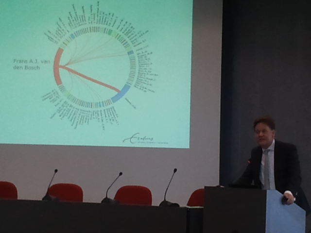

Presentation of the visualization at the farewell symposium in honor of Pr. van den Bosch
What:
This is an evening project at the occasion of a symposium honoring Pr. Frans van den Bosch, a professor at my university
It shows all the co-authors of the professor, with the tickness of links corresponding to the number of co-authored publications
Visualization tool:
circos
Data source:
all the publications of the professor in a bibTex file
Processing:
I used Java to parse the bibTex file and generate the Circos configuration file. I implemented the possibility to select the publications restricted to a range of years
Impressions:
Circos makes indeed impactful visualizations. It is a real pain to configure (15+ config files, anybody?), but has an incredibly helpful debugger
Source code:
Github repository (the code is quite ugly as this was for a single night project!)
Higher res picture of the circle:
Click here for a better quality picture.
I'm Clement Levallois, and you can see my other projects here: clementlevallois.net
{kind=link}